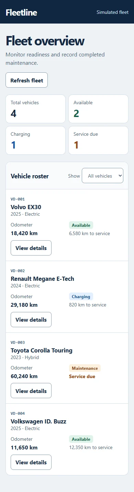

Engineering project · Runtime screenshot
Fleetline
Review a fictional fleet and record maintenance with date, distance and version validation.
Local portfolio demo
Public source access pending.
Run the local demo
From the prepared project checkout, run these commands and open the address printed by the server. The repository may require access.
cd vehicle-digital-platforms
mvn -f services/vehicle-service/pom.xml package
java -jar services/vehicle-service/target/vehicle-service-1.0.0.jar --spring.profiles.active=demo
# Open http://127.0.0.1:8082/api/vehicles/

Problem
A fleet operator needs to record completed maintenance without stale edits or incorrect odometer values.
Architecture
Spring Boot serves the dashboard and API. Spring Data JPA persists demo vehicles in a local H2 file, with optimistic locking on writes. A separate user service handles accounts.
Engineering decisions
- Validate UTC dates and whole-kilometre odometer values on the server.
- Keep maintenance completion separate from the operational release decision.
Implemented workflow
- Filter the roster to Service due and open the Toyota.
- Record a valid service reading and inspect the updated service interval.
- Try a lower odometer or future date, then reload a stale record.
Checks and evidence
Prepared application screenshots and the source README document this workflow. Application checks were not rerun during this portfolio update.
- Reviewed the source README and prepared screenshots in project-2026 on 25 November 2026.
Scope and next steps
- Fuel and battery levels are simulated snapshots.
- The fixed service interval is a demo assumption and the form updates the latest maintenance snapshot.
- There are no live vehicle, driver-license, trip or telemetry connections.
Technology
Java · Spring Boot · JPA · H2
Preview availability
Screenshots show the prepared local version. Hosted demos remain pending, and source access may require permission. Local setup requirements and remaining limits are documented above.
← Return to portfolio